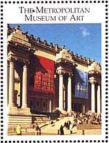
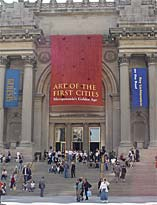
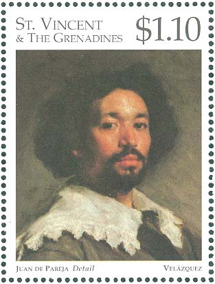
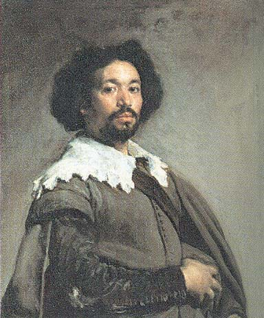

Diego Velazquez - Portrait of Jeaan de Pareja
|
 |
|

Metropolitan Museum of Art
DIEGO VELAZQUEZ

Diego Velazquez
, a Spanish painter, 1599-1660. Portrait of Juan de Pareja, oil on canvas, 32 x 27 1/2 in (81.3 x 69.9 cm).Philip IV, the Spanish king, sent in 1648 Velazquez to Italy to buy works of art for Alcazar, his newly renovated royal palace in Madrid. While in Rome, then the world center of the international art, Velazquez painted two portraits that deeply impressed his contemporaries. The first was that of Pope Innocent X, portrait that is exposed at the Doria Pamphili Gallery in Rome. The second portrait was that of his assistant, the painter Juan de Pareja (ca. 1610 - 1670), a Sevillian of Moorish descendant.

This picture was exhibited at the Pantheon on March 19, 1650, and one connoisseur who viewed it said to have remarked that while all the rest was art, this alone was truth (whatever this could mean - V.M.). It is mainly thanks to a bequest and funds that were received in 1917 from Isaac D. Fletcher that this portrait could be acquired by the the Metropolitan Museum in 1971.

The presented stamp, part of a minisheet of nine stamps, was issued in the year 1995, in order to commemorate the 125th anniversary of the Metropolitan Museum of Art. Apparently the Grenadines of St. Vincent are not inhabited...
Source: The Metropolitan Museum of Art Guide, ISBN 0-87099-710-6
Links:-
Portraits from the Metropolitan Museum
-
Metropolitan Museum of Art, New York, U.S.A.